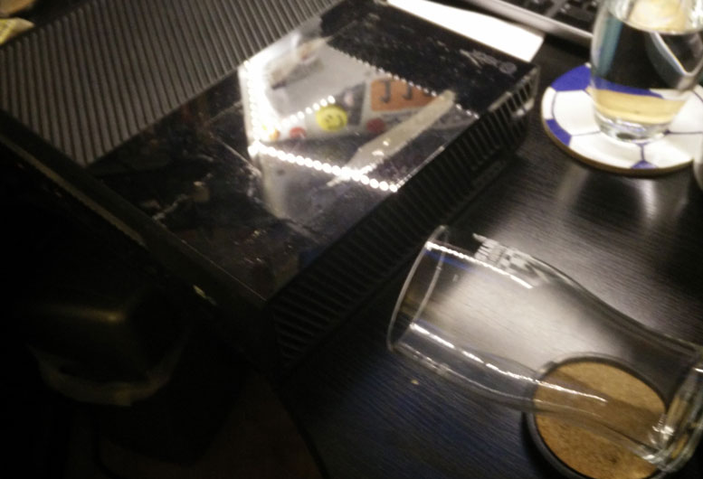

AlexFarren.co.uk
Technical Thoughts..
Musings of a technophile
My Xbox Drank a Pint of Water and Lived to Tell the Tale

TL;DR
- I spilled a pint of water into the air vent of my Xbox One
- After pouring out the water I left it on one end to drain
- That evening I put it in a cardboard box with 6kg of rice, inside the airing cupboard, for 11 days
- It worked!
Tragedy.. I got up in the middle of the night to have a sip of water. In my half awake state, when placing the glass back on my desk it tipped over right into an air vent on the left side of my Xbox One..
Holding the Xbox over the bath, watching the flood of water cascade out of it, I had very little hope of recovering the console. I'm not exagerating here, the water had entered one side and exited the other, an entire glass of water flodded into it.
Luckily for me, the Xbox wasn't in hibernation mode and the power was off at the wall so after disconnecting everything, draining the bulk of the water into the bath and then leaving it on its end to drain while I went to work, I scoured the internet for a solution.
Most of the articles and forum posts I found were in reference to Xbox 360's but I figured the same principles applied. There were a lot of suggestions for taking the console apart and using rubbing alcohol to dry the components. I have experience with electronics an soldering, and previously took apart my Xbox 360 to fix its RROD, however I didn't want to take this drastic step so soon.
The other main suggestion was going down the iPhone route and encasing the console in rice for a number of days. As I was about to go on holiday I figured I would try this first.
On my way home I picked up 6kg of the cheapest rice I could find and then set to work. First I propped the Xbox up next to a hair dryer pointing into the vent the water entered and left it on for around 5 minutes.
I then used kitchen towel sheets to cover up the vents (to stop the rice going inside the console) securing it in place with parcel tape.
I then dug out a large cardboard box (thanks Amazon!) and popped the console in around the rice.
After that I sealed it and placed it in the airing cupboard next to a hot pipe and left it there whilst I was on holiday for 11 days.
On returning from Holiday, I eagerly removed the console from the box and took the kitchen towel off. Plugging it in I nervously pressed the power button.
It seemed a tad slow, but that may have been because I was waiting impatiently, it booted up and I quickly played through a level of Rayman almost dumbfounded.
I have since tested running games from disk as well as hard drive, and played for around an hour and it seems fine. I don't know whether any components might be weakened by the water trauma, but for now it seems to have no issues. To be honest I am amazed it worked, and put it down to the fact that no power was running through the console and to the duration I left it drying.